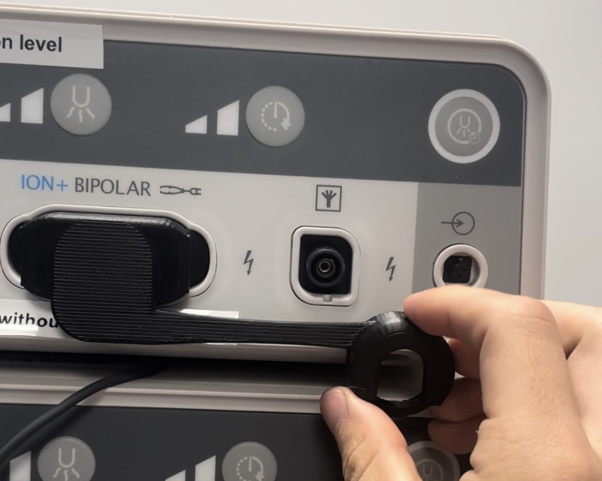
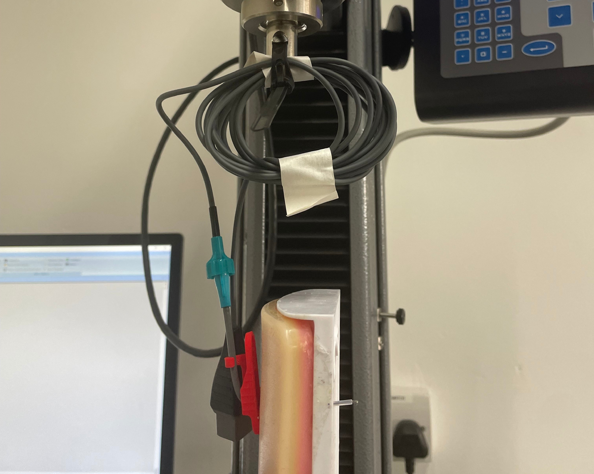
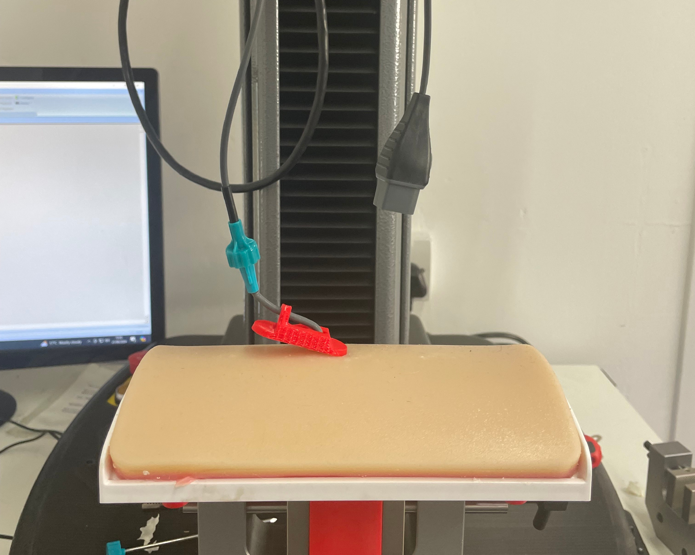
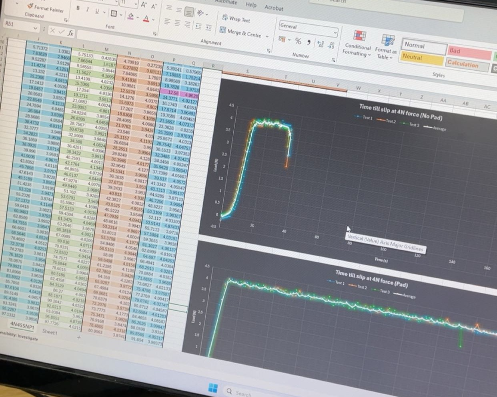

← Back to portfolio
Internship
ALESI
ALESI
SURGICAL
Medical device development — custom electronic test rigs, mechanical design, and ISO 13485-compliant validation testing on the Ultravision 2 ION+ Bipolar device.

Medical device development — custom electronic test rigs, mechanical design, and ISO 13485-compliant validation testing on the Ultravision 2 ION+ Bipolar device.
Engineering internship at Alesi Surgical LTD, contributing to the development of the Ultravision 2 medical device system. Gained experience in medical device engineering, regulatory requirements, and product testing in a healthcare technology environment.
Designed and built custom electronic test rigs from scratch — from circuit requirements through component selection, breadboarding, and final assembly. Included frequency sensor circuits with appropriate signal conditioning to interface with AMETEK validation instrumentation, measuring specific electrical characteristics of the Ultravision 2 ION+ Bipolar surgical energy tool.
Contributed to mechanical design on device components, using CAD to develop and iterate on parts within tight medical device constraints. Medical-grade components must account for material biocompatibility, sterilisation compatibility, and clinical assembly practicalities. Design iterations reviewed against device specifications and manufacturing requirements before physical prototypes.
Ran structured test campaigns to build the evidence base for design decisions and regulatory submissions. Testing included validation of device performance against synthetic tissue models mimicking patient tissue electrical and mechanical properties. All results captured and documented consistent with ISO 13485 quality management and traceability requirements.
Gallery






